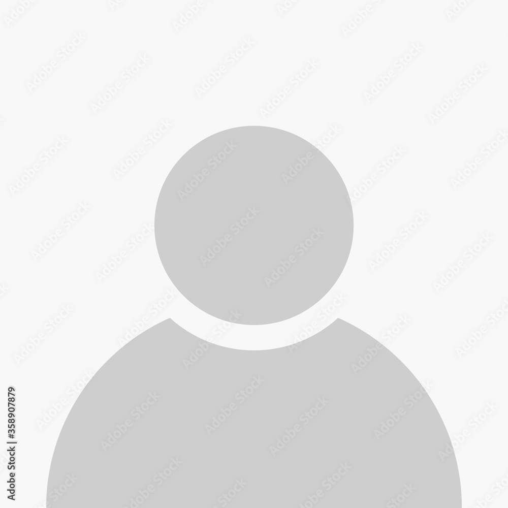

<!-- profil.page.html -->
<ion-header [translucent]="true">
  <ion-toolbar>
    <ion-buttons slot="start">
      <ion-back-button default-href="annonces"></ion-back-button>
    </ion-buttons>
    <ion-title>User Profil</ion-title>
  </ion-toolbar>
</ion-header>

<ion-content class="profile">
  <ion-card>
    <ion-card-content class="bg-profile" color="dark">
      
      <h1 class="fw500">{{username}}</h1>
      <h2 color="light" margin-bottom>{{email}}</h2>

    </ion-card-content>
  </ion-card>

  <ion-list>
    <ion-item>
      <ion-label>Full Name</ion-label>
      <ion-text>{{ fullname }}</ion-text>
    </ion-item>

    <ion-item>
      <ion-label>Address</ion-label>
      <ion-text>{{ address }}</ion-text>
    </ion-item>

    <ion-item>
      <ion-label>BirthDay</ion-label>
      <ion-text>{{ formattedBornDate }}</ion-text>
    </ion-item>

    <ion-item>
      <ion-label>Phone</ion-label>
      <ion-text>{{ phone }}</ion-text>
    </ion-item>

    <ion-item>
      <ion-label>Email</ion-label>
      <ion-text>{{ email }}</ion-text>
    </ion-item>

    <!-- Add more items as needed for other user details -->

  </ion-list>
</ion-content>
<ion-footer style="margin-top: 50px;">
  <ion-tabs>

    <ion-fab vertical="bottom" horizontal="center" translucent="true">
      <ion-fab-button routerLink="/add-annonce">
        <ion-icon class="grad" name="add-circle"></ion-icon>
      </ion-fab-button>
    </ion-fab>

    <ion-tab-bar slot="bottom" class="ion-no-border">
      <ion-tab-button routerLink="/annonces">
        <ion-icon name="home"></ion-icon>
      </ion-tab-button>

    <ion-tab-button class="comments" routerLink="/mes-annonces">
        <ion-icon name="heart"></ion-icon>
      </ion-tab-button>

      <svg height="50" viewBox="0 0 100 50" width="100" xmlns="http://www.w3.org/2000/svg">
        <path d="M100 0v50H0V0c.543 27.153 22.72 49 50 49S99.457 27.153 99.99 0h.01z" fill="red" fill-rule="evenodd">
        </path>
      </svg>

      <ion-tab-button class="notifs"  >
        <ion-icon name="notifications"></ion-icon>
        <ion-badge color="danger" ></ion-badge>
      </ion-tab-button>

      <ion-tab-button routerLink="/profil">
        <ion-icon name="person"></ion-icon>
      </ion-tab-button>
    </ion-tab-bar>
  </ion-tabs>
</ion-footer>
